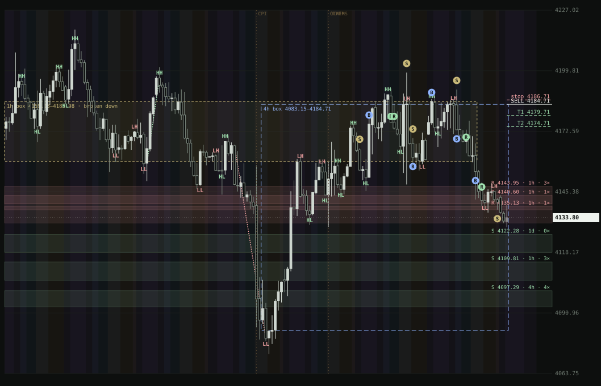

Open source · runs on your machine
View Engine: an AI research and trading desk that shows its work.
Ask a question and an orchestrator hires a team of AI agents to research it on your own Claude Code subscription. Drop a TradingView chart and it reads the structure, draws it, and gives a buy / sell / hold call from RLCD, a calibrated decision model that reports its own track record.

What it does
An agent team per question
A single orchestrator hires researchers, analysts, a strategist and a critic, wires them into a dependency graph and returns a decision with sources. You watch them work live.
Understands what you want
Paste a chart and ask "long or short now?". It works out whether you want a position or research, a day trade or a swing, and reads the instrument from the chart header.
Structure drawn for you
HH / HL / LH / LL by candle bodies, consolidation boxes across timeframes, support and resistance zones, sweeps, fakeouts and retests, sessions and three-star news.
Top-down plan with fixed risk
H4 context, H1 setup, M15/M5 trigger. Every plan has a sell case, a buy case and a hold case with reasons, a 20-pip stop and 50/100-pip targets.
RLCD: a calibrated decision model, with honest numbers
RLCD answers typed questions with probabilities instead of text. It is trained on gold since 2019 and nine FX pairs since 2021, and every number it reports comes from the most recent 20% of history, which it never trained on. A Bernoulli gate keeps it at "hold" until those held-back trades beat breakeven.
| Entry timeframe | Trades on held-back history | Win rate | Breakeven | Verdict |
|---|---|---|---|---|
| H1 | 47 | 19.1% | 30.0% | hold |
| M15 | 8 | 50.0% | 30.5% | hold (too few trades) |
| M5 | 811 | 28.4% | 31.9% | hold |
So today it says hold: with a 20-pip stop, structure, sessions, news timing and classic patterns predict how far price moves, not which way. The model is built to tell you that rather than guess.
Run it
git clone https://github.com/f8fvwgzc/view-engine.git
cd view-engine
make devNeeds Docker, Rust, Node 22+, uv and a logged-in Claude Code CLI. The UI opens on localhost:5173. No API billing: agents use your own CLI subscription, and all market data comes from free public sources (HistData, Yahoo Finance, gold-api.com, ForexFactory and official central-bank calendars).
Built with
- Rust (axum, sqlx) API with Postgres + pgvector memory and Redis live events
- React + TypeScript UI with a live agent graph and annotated charts
- Python quant sidecar (FastAPI) and the RLCD service (scikit-learn, LightGBM, calibrated with CalibratedClassifierCV)
- A TradingView Pine indicator with the same body-close drawing rules